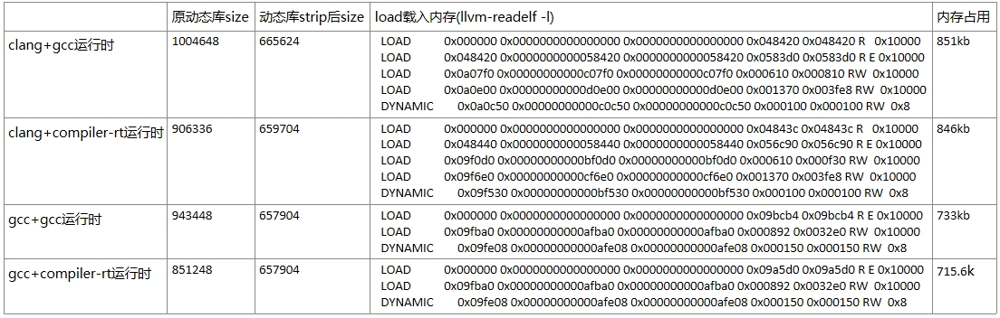
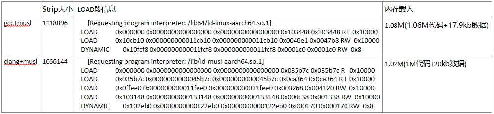

小型化特性¶
小型化分为二进制小型化和内存小型化，有些应用场景对镜像二进制大小有严格的限制，而有些应用场景则对系统OS的运行内存有着严格的限制。openEuler Embedded在小型化方面专门针对内存受限环境做了很多研究，这其中包括编译链的优化对比、内核的精简化裁剪、文件系统的精简、系统文件挂载的优化。
我们在OEE已支持的hipico单板上进行的研究，采用clang+musl编译链，小型化内存数据如下：
OS裁剪 |
|
|---|---|
物理可用内存 |
48M |
总使用内存 |
10.97M |
内核自身内存 |
4.98M |
内核态内存 |
2.96M |
用户态内存 |
0.722M |
内核态内存定义：SUnreclaim(不可回收)+KernelStack(内核栈)+PageTables(页表)+VmallocUsed(已分配内存)+Percpu(CPU缓存)
用户态内存定义：Active(活动内存)+Inactive(不活动内存)
二进制小型化数据：
组件 |
大小 |
|---|---|
内核二进制 |
1.4M |
根文件二进制 |
3.79M |
编译链的优化对比¶
编译链对比¶
gcc与clang的对比¶
GCC原名是GNU C Compiler，是GNU项目的C语言编译器，其功能强大。
支持语言
C、C++、Fortran、Pascal、Objective-C、Java、Ada、Go等。
跨平台与兼容性
操作系统：Linux、Windows、macOS等。
硬件架构：X86、ARM等多种CPU指令集。
Linux内核等开源项目的准编译器。
核心优点
多语言支持： 支持多种编程语言,如C、C++、Fortran、Pascal、Objective-C、Java、Ada、Go等。
跨平台性： GCC编译器能够在不同的操作系统和硬件平台上编译和运行代码，确保了代码的高度可移植性。
性能优化： GCC编译器内置了多种优化策略，可以根据不同的编译选项进行代码优化，从而提升程序的运行效率。
功能丰富： 编译时可生成调试信息，便于开发者进行调试。并提供了广泛的编译选项和扩展功能，以满足不同开发者的需求。
社区支持： GCC编译器是一个开源项目，有一个活跃的社区支持，开发者可以从社区获取帮助、分享经验和贡献代码。
Clang是一个由 LLVM 项目开发的 C、C++、Objective-C 等编程语言的编译器前端。它旨在提供更快的编译速度、更好的错误报告及与GCC兼容的编译器驱动程序。Clang 是 LLVM 编译器基础设施的一部分，通常与 LLVM 后端一起使用来生成机器代码。Clang的主要特点包括：
核心特点
高效性：编译速度更快，内存占用低于GCC。
友好诊断：提供清晰详尽的错误/警告信息。
GCC兼容性：支持多数GCC选项，便于迁移。
模块化架构：易于扩展和集成到其他工具链。
现代语言支持：适配最新C++标准等特性。
工具生态
静态分析工具（clang-tidy）
代码格式化工具（clang-format）
重构工具等，提升代码质量与开发效率。
glibc与musl的对比¶
glibc是GNU C Library（glibc），GNU项目的C/C++标准库实现。
核心特性
功能全面：支持国际化、本地化、调试及性能优化等扩展功能
高兼容性：广泛遵循各类标准，适配多架构（如x86/ARM）和操作系统
Linux默认：主流Linux系统的标准C库
设计权衡
优势：功能丰富，兼容性强
代价：代码量大导致编译速度慢，依赖项较多
musl是一个轻量级C/C++标准库，注重代码质量和安全性。
核心特性
高效：代码精简，编译速度快，无额外依赖。
嵌入式友好：适合资源受限场景（如嵌入式系统）。
关键优势：静态链接、实时性、内存高效、源码级兼容性。
发展现状
活跃开源项目，拥有积极开发者社区。
已被多个Linux发行版采用，如Alpine Linux、Arch Linux等。
优势
代码量小：相比glibc，musl的代码量更少，编译速度更快。
内存占用低：musl的静态链接特性使得生成的可执行文件占用的内存更少。
安全性高：musl的设计注重安全性，避免了一些glibc中的安全问题。
兼容性好：musl支持大多数的C标准库函数，并且与glibc兼容。
各编译链的编译数据对比¶
gcc与clang的编译数据对比(musl库)¶
clang+musl对busybox的编译数据对比¶
编译链的制作¶
准备32位gcc+musl编译链
可以直接从openEuler Embedded的源码仓发布件下载，发布件名称为openeuler_gcc_arm32le-musl
准备编译链源码
llvm-project源码为：https://gitee.com/openeuler/llvm-project这里我们选用dev_19.1.7版本,执行以下命令下载llvm-project源码：
git clone https://gitee.com/openeuler/llvm-project.git -b dev_19.1.7 --depth=1musl源码为：https://gitee.com/src-openeuler/musl.git，这里我们参考manifest.yaml中的musl版本，执行以下命令下载musl源码：
git init openeuler-musl cd openeuler-musl git remote add origin https://gitee.com/src-openeuler/musl.git git fetch origin <version> --depth=1 git checkout <version>
单步编译llvm
我们编译链的安装目录设定为：/home/lixinyu/toolchain/llvm-musl-arm，这里开发者可以自行设置，但是前提要有写入权限
编译llvm二进制：
cd llvm-project mkdir build-llvm cd build-llvm cmake \ -G "Unix Makefiles" \ -DCMAKE_BUILD_TYPE=Release \ -DLLVM_ENABLE_PROJECTS="clang;lld" \ -DLLVM_TARGETS_TO_BUILD="ARM" \ -DLLVM_DEFAULT_TARGET_TRIPLE=arm-openeuler-linux-musleabi \ -DCMAKE_INSTALL_PREFIX=/home/lixinyu/toolchain/llvm-musl-arm \ -DCMAKE_C_COMPILER=gcc \ -DCMAKE_CXX_COMPILER=g++ \ -DCMAKE_CROSSCOMPILING=ON \ -DCLANG_DEFAULT_CXX_STDLIB=none \ -DCLANG_DEFAULT_LINKER=lld \ -DCLANG_DEFAULT_RTLIB=compiler-rt \ -DLLVM_ENABLE_LIBCXX=OFF \ ../llvm make -j$(nproc) make install将clang编译器加入到PATH路径中，例如：
export PATH=/home/lixinyu/toolchain/llvm-musl-arm/bin:$PATH编译compiler-rt：
编译compiler-rt需要用到gcc的运行时库，前面编译好的32位gcc+musl这里就派上了用场，执行以下命令来拷贝gcc运行时库：
cp -rf <gcc-musl-arm>/lib/gcc /home/lixinyu/toolchain/llvm-musl-arm/lib/ cp -rf <gcc-musl-arm>/arm-openeuler-linux-musleabi/include /home/lixinyu/toolchain/llvm-musl-arm/arm-openeuler-linux-musleabi cp -rf <gcc-musl-arm>/arm-openeuler-linux-musleabi/sysroot/* /home/lixinyu/toolchain/llvm-musl-arm/arm-openeuler-linux-musleabi/sysroot/修改compiler-rt源码，将智能检查中所有stat64的定义改为stat，这是因为musl libc不提供单独的stat64结构体，在设定_FILE_OFFSET_BITS=64时，musl的<sys/stat.h>中的stat就是64位版本。执行以下命令进行修改：
cd llvm-project vim compiler-rt/lib/sanitizer_common/sanitizer_linux.cpp # 将所有state64的定义改为stat，注意是要将所有stat64的调用改为stat，直接进行替换即可,例如： bool FileExists(const char *filename) { if (ShouldMockFailureToOpen(filename)) return false; # struct stat64 st; struct stat st; if (internal_stat(filename, &st)) return false; // Sanity check: filename is a regular file. return S_ISREG(st.st_mode); }继续执行以下命令：
cd llvm-project mkdir build-compiler-rt cd build-compiler-rt cmake -G "Unix Makefiles" \ -DCOMPILER_RT_BUILD_BUILTINS=ON \ -DCOMPILER_RT_INCLUDE_TESTS=OFF \ -DCOMPILER_RT_BUILD_SANITIZERS=OFF \ -DCOMPILER_RT_BUILD_XRAY=OFF \ -DCOMPILER_RT_BUILD_LIBFUZZER=OFF \ -DCOMPILER_RT_BUILD_PROFILE=OFF \ -DCOMPILER_RT_DEFAULT_TARGET_ONLY=ON \ -DLLVM_TARGETS_TO_BUILD="ARM" \ -DCMAKE_C_COMPILER=clang \ -DCMAKE_CXX_COMPILER=clang++ \ -DCMAKE_ASM_COMPILER=clang \ -DCMAKE_C_FLAGS="-march=armv7-a" \ -DCMAKE_CXX_FLAGS="-march=armv7-a" \ -DCMAKE_EXE_LINKER_FLAGS="-march=armv7-a" \ -DCMAKE_ASM_FLAGS="-march=armv7-a" \ -DCMAKE_ASM_COMPILER_TARGET="arm-openeuler-linux-musleabi" \ -DCMAKE_C_COMPILER_TARGET="arm-openeuler-linux-musleabi" \ -DCMAKE_CXX_COMPILER_TARGET="arm-openeuler-linux-musleabi" \ -DCMAKE_SYSROOT=/home/lixinyu/toolchain/llvm-musl-arm/arm-openeuler-linux-musleabi/sysroot \ -DCMAKE_INSTALL_PREFIX=/home/lixinyu/toolchain/llvm-musl-arm/arm-openeuler-linux-musleabi/sysroot \ -DCMAKE_C_COMPILER_WORKS=1 \ -DCMAKE_CXX_COMPILER_WORKS=1 \ -DCMAKE_SIZEOF_VOID_P=8 \ ../compiler-rt make -j$(nproc) make install编译musl：
执行以下命令来编译musl：
cd openeuler-musl cd musl-1.2.4 ARCH=arm \ CROSS_COMPILER=llvm- \ CC="clang" \ LIBCC="/home/lixinyu/toolchain/llvm-musl-arm/arm-openeuler-linux-musleabi/sysroot/lib/linux/libclang_rt.builtins-arm.a" \ ./configure --prefix=/home/lixinyu/toolchain/llvm-musl-arm/arm-openeuler-linux-musleabi/sysroot make -j$(nproc) make install编译libunwind：
编译libunwind需要修改的地方较多，这里我直接打了一个补丁，就可直接将补丁内容打在linunwind中：
diff --git a/libunwind/CMakeLists.txt b/libunwind/CMakeLists.txt index 28d67b0fe..c3e2bc02e 100644 --- a/libunwind/CMakeLists.txt +++ b/libunwind/CMakeLists.txt @@ -55,6 +55,8 @@ option(LIBUNWIND_USE_FRAME_HEADER_CACHE "Cache frame headers for unwinding. Requ option(LIBUNWIND_REMEMBER_HEAP_ALLOC "Use heap instead of the stack for .cfi_remember_state." OFF) option(LIBUNWIND_INSTALL_HEADERS "Install the libunwind headers." ON) option(LIBUNWIND_ENABLE_FRAME_APIS "Include libgcc-compatible frame apis." OFF) +option(LIBUNWIND_ENABLE_ASSEMBLY "Enable assembly support" ON) + set(LIBUNWIND_LIBDIR_SUFFIX "${LLVM_LIBDIR_SUFFIX}" CACHE STRING "Define suffix of library directory name (32/64)") @@ -292,6 +294,7 @@ if (LIBUNWIND_ENABLE_ARM_WMMX) # provide the option to explicitly enable support for WMMX registers in the # unwinder. add_compile_flags(-D__ARM_WMMX) + add_compile_flags(-D_LIBUNWIND_ARM_WMMX) endif() if(LIBUNWIND_IS_BAREMETAL) diff --git a/libunwind/src/CMakeLists.txt b/libunwind/src/CMakeLists.txt index 780430ba7..b26f79467 100644 --- a/libunwind/src/CMakeLists.txt +++ b/libunwind/src/CMakeLists.txt @@ -1,5 +1,9 @@ # Get sources +enable_language(ASM) +set(CMAKE_C_FLAGS "-march=armv7-a -mfpu=vfpv3-d16 -mfloat-abi=hard") +set(CMAKE_CXX_FLAGS "-march=armv7-a -mfpu=vfpv3-d16 -mfloat-abi=hard") + set(LIBUNWIND_CXX_SOURCES libunwind.cpp Unwind-EHABI.cpp ~执行libunwind编译命令：
cmake -G "Unix Makefiles" \ -DCMAKE_C_COMPILER=clang \ -DCMAKE_CXX_COMPILER=clang++ \ -DCMAKE_ASM_COMPILER=clang \ -DCMAKE_VERBOSE_MAKEFILE=True \ -DLIBUNWIND_USE_COMPILER_RT=ON \ -DLIBUNWIND_ENABLE_CROSS_UNWINDING=ON \ -DLIBUNWIND_ENABLE_ARM_WMMX=ON \ -DLIBUNWIND_ENABLE_ASSEMBLY=ON \ -DCMAKE_C_COMPILER_TARGET="arm-openeuler-linux-musleabi" \ -DCMAKE_CXX_COMPILER_TARGET="arm-openeuler-linux-musleabi" \ -DCMAKE_C_FLAGS="-march=armv7-a -mfpu=vfpv3-d16 -mfloat-abi=hard" \ -DCMAKE_CXX_FLAGS="-march=armv7-a -mfpu=vfpv3-d16 -mfloat-abi=hard" \ -DCMAKE_ASM_FLAGS="-march=armv7-a" \ -DCMAKE_EXE_LINKER_FLAGS="-march=armv7-a" \ -DCMAKE_SYSROOT=/home/lixinyu/toolchain/llvm-musl-arm/arm-openeuler-linux-musleabi/sysroot \ -DCMAKE_INSTALL_PREFIX=/home/lixinyu/toolchain/llvm-musl-arm/arm-openeuler-linux-musleabi/sysroot \ -DCMAKE_CXX_COMPILER_WORKS=1 \ ../libunwind make -j$(nproc) make install至此，llvm-musl-arm编译链制作完毕
编译链总结¶
专为小而美场景设计，牺牲兼容性与性能换取极致精简，选型前需严格评估生态依赖。
核心优势
极简轻量：静态链接仅10KB，动态约50KB，远超Glibc效率，适合嵌入式/IoT设备。
全LLVM生态：Clang+Musl+LLD无缝协作，避免GNU依赖，支持交叉编译（ARM/RISC-V等）。
高安全性：静态二进制减少动态库注入风险，适配安全固件和容器（如Alpine Linux）。
主要局限
性能短板：未优化NEON指令，计算密集型场景性能落后Glibc达1.5倍。
兼容性差：GNU软件（如MariaDB）需大量补丁，动态链接生态薄弱。
调试困难：缺乏ftrace/kprobes，IDE支持不完善。
适用场景
推荐：资源受限设备、静态容器镜像、隔离环境。
避免：高性能计算、复杂网络服务、多用户系统。
内核精简¶
内核优化后的数据¶
数据类型 |
自身二进制大小 |
自身占用内存大小 |
内核态内存大小 |
|---|---|---|---|
数据值 |
1.4M |
4.98M |
2.96M |
项目 |
值 |
项目 |
值 |
|---|---|---|---|
MemTotal |
44052 kB |
MemFree |
37884 kB |
MemAvailable |
37904 kB |
Buffers |
288 kB |
Cached |
1480 kB |
SwapCached |
0 kB |
Active |
1472 kB |
Inactive |
428 kB |
Active(anon) |
0 kB |
Inactive(anon) |
136 kB |
Active(file) |
1472 kB |
Inactive(file) |
292 kB |
Unevictable |
4 kB |
Mlocked |
0 kB |
SwapTotal |
0 kB |
SwapFree |
0 kB |
Dirty |
0 kB |
Writeback |
0 kB |
AnonPages |
164 kB |
Mapped |
1124 kB |
Shmem |
0 kB |
KReclaimable |
740 kB |
Slab |
3076 kB |
SReclaimable |
740 kB |
SUnreclaim |
2336 kB |
KernelStack |
320 kB |
PageTables |
84 kB |
NFS_Unstable |
0 kB |
Bounce |
0 kB |
WritebackTmp |
0 kB |
CommitLimit |
22024 kB |
Committed_AS |
1012 kB |
VmallocTotal |
1245184 kB |
VmallocUsed |
180 kB |
VmallocChunk |
0 kB |
Percpu |
112 kB |
内核各个特性对内存的影响¶
以下表格列举了内核各个特性对内存的影响，计算方式每次配置的变动计算（memtotal-memavailable）的差值：
特性 |
内存收益(kb) |
说明 |
|---|---|---|
DRM |
2592 |
图形硬件渲染 |
NVMEM |
124 |
管理非易失性存储器 |
VFAT_FS |
492 |
支持VFAT文件系统 |
MTD |
2464 |
闪存设备存储管理框架 |
INET&NETDEVICE |
640 |
网络设备驱动框架 |
ATA&SCSI |
112 |
硬盘存储设备的接口支持 |
USB |
16 |
支持USB相关设备 |
I2C |
132 |
支持I2C相关设备 |
NETWORK |
96 |
控制基础网络栈和网络设备通信 |
HID基本配置 |
40 |
人机交互 |
DEBUG_INFO |
124 |
调试开关 |
SLUB_DEBUG |
140 |
SLUB分配器调试开关 |
Export Users优化 |
232 |
管理用户环境 |
KCMP&RSEQ |
4 |
进程间交互与线程同步 |
SLAB&SLUB优化 |
1200 |
内存分配器 |
KABI_RESERVE&PROFILING |
108 |
内存分配器 |
Power manager优化 |
216 |
电源管理优化 |
Mem manager优化 |
196 |
内存管理优化 |
Driver device优化 |
124 |
外部设备优化 |
MOUSE_PS2相关配置 |
8 |
PS2接口的鼠标驱动 |
内核精简总结¶
这是一个为海思ARM芯片深度优化的极简内核，具备强悍的闪存支持和实时性，但牺牲了网络、多用户等通用功能，适合单一功能的低资源嵌入式设备。
类别 |
已启用特性 |
缺失特性 |
|---|---|---|
硬件支持 |
ARMv7多核（SMP）、NEON/VFPv3、SPI/I2C/GPIO外设、MTD/NAND闪存 |
USB、网络设备、PCIe |
存储 |
UBI/UBIFS闪存文件系统、XZ压缩内核 |
交换分区（SWAP）、EXT4/Btrfs |
安全 |
内核代码段只读、Spectre分支预测硬化 |
Seccomp沙箱、审计子系统 |
调试 |
Magic SysRq、OOPS触发Panic |
ftrace、kprobes、KGDB |
用户空间 |
基础SysV IPC、静态二进制支持 |
多用户、动态链接库、POSIX定时器 |
典型应用场景
推荐场景
离线视频采集（海思芯片核心用途）
GPIO控制的工业设备（如PLC控制器）
只读嵌入式系统（UBIFS+MTD闪存方案）
禁忌场景
需要网络连接的网关设备
多用户服务器或容器平台
高性能计算（无NEON优化/io_uring）
文件系统精简¶
文件系统的数据¶
用户态内存 |
进程数 |
|
|---|---|---|
数据 |
700kB |
36 |
以下是进程列表，其中ps为获取进程数进程，不计算在内：
PID |
USER |
VSZ |
STAT |
COMMAND |
|---|---|---|---|---|
1 |
0 |
1784 |
S |
init |
2 |
0 |
0 |
SW |
[kthreadd] |
3 |
0 |
0 |
IW< |
[rcu_gp] |
4 |
0 |
0 |
IW< |
[rcu_par_gp] |
5 |
0 |
0 |
IW |
[kworker/0:0-eve] |
6 |
0 |
0 |
IW< |
[kworker/0:0H-kb] |
8 |
0 |
0 |
IW< |
[mm_percpu_wq] |
9 |
0 |
0 |
SW |
[ksoftirqd/0] |
10 |
0 |
0 |
IW |
[rcu_sched] |
11 |
0 |
0 |
SW |
[migration/0] |
12 |
0 |
0 |
SW |
[cpuhp/0] |
13 |
0 |
0 |
SW |
[cpuhp/1] |
14 |
0 |
0 |
SW |
[migration/1] |
15 |
0 |
0 |
SW |
[ksoftirqd/1] |
17 |
0 |
0 |
IW< |
[kworker/1:0H-kb] |
18 |
0 |
0 |
SW |
[kdevtmpfs] |
19 |
0 |
0 |
IW |
[kworker/u4:1-ev] |
56 |
0 |
0 |
IW |
[kworker/u4:2-ev] |
96 |
0 |
0 |
SW |
[oom_reaper] |
97 |
0 |
0 |
IW< |
[writeback] |
98 |
0 |
0 |
SW |
[kcompactd0] |
100 |
0 |
0 |
SWN |
[ksmd] |
106 |
0 |
0 |
IW |
[kworker/0:1-eve] |
122 |
0 |
0 |
IW< |
[kblockd] |
126 |
0 |
0 |
SW |
[spi0] |
132 |
0 |
0 |
SW |
[spi1] |
133 |
0 |
0 |
IW |
[kworker/1:2-rcu] |
140 |
0 |
0 |
IW< |
[devfreq_wq] |
143 |
0 |
0 |
IW |
[kworker/1:3-mm_] |
231 |
0 |
0 |
SW |
[kswapd0] |
376 |
0 |
0 |
IW< |
[kworker/1:1H-kb] |
377 |
0 |
0 |
SW |
[jbd2/mtdblock3-] |
378 |
0 |
0 |
IW< |
[ext4-rsv-conver] |
385 |
0 |
1788 |
S |
-/bin/sh |
386 |
0 |
1784 |
S |
init |
387 |
0 |
1784 |
S |
init |
388 |
0 |
1784 |
S |
init |
398 |
0 |
0 |
IW< |
[kworker/0:1H-kb] |
文件系统的组成¶
busybox |
musl |
|
|---|---|---|
二进制大小 |
946k |
658k |
静态内存大小 |
982.6k |
661.6k |
根文件系统精简总结¶
以牺牲功能和生态为代价，实现最小化部署，适合对体积和启动速度敏感的场景。
适用场景
推荐：嵌入式设备、救援系统、极简容器镜像（如Alpine基础层）。
避免：需要复杂服务管理或多用户管理的系统。
镜像构建与烧录¶
构建镜像
// 在platform选hipico，在feature选minimal
bitbake generate
// 进入build/hipico目录，
oebuild bitbake
// 进入bitbake构建交互环境
bitbake openeuler-image-minimal
// 构建完成后在output目录下有内核镜像和根文件系统，拷贝uImage，以及ext4文件到win系统下
烧录镜像
镜像烧录参考 HiPico镜像烧录
启动注意事项
在烧录完成后按rst，重新上电，然后迅速按ctrl+c进入uboot系统，修改bootargs参数如下：
setenv mem=48M console=ttyAMA0,115200 clk_ignore_unused root=/dev/mtdblock3 rootfstype=ext4 rw mtdparts=nand:512K(boot),512K(env),7M(kernel),120M(rootfs)
saveenv // 可选，如果不保存，每次上电都需要重新设置
然后执行boot命令
系统小型化优化策略¶
系统小型化的核心目标是 减少存储占用（Flash）和运行时内存（RAM），同时保证功能完整性和性能稳定性，以下是一些实现小型化的思路：
工具链优化¶
编译器选择
优先使用 Clang + LLD（替代GCC + GNU ld） - LLVM工具链生成的代码更紧凑 - 支持更好的优化选项
若必须用GCC： - 开启 -Os（优化体积） - 或 -Oz（Clang特有，更激进优化）
标准库选择
使用 Musl libc（替代Glibc） - 体积更小（静态链接可<100KB） - 无冗余功能
避免动态链接（除非必须） - 静态链接能减少依赖 - 需注意代码膨胀问题
内核裁剪¶
Linux内核配置
使用 make tinyconfig 生成最小配置 - 按需添加驱动和功能
禁用无用模块： - USB、网络等非必要模块 - 调试符号 CONFIG_DEBUG_INFO=n
启用特殊选项： - CONFIG_EMBEDDED - CONFIG_EXPERT
内核压缩
选择 XZ（高压缩比）
或 LZ4（低解压开销）
根文件系统优化¶
BusyBox配置
替代完整Shell工具集（bash/coreutils） - 静态编译后仅1~2MB
裁剪无用命令： - make menuconfig 选择必需功能
Init系统选择
使用 BusyBox init
或 s6-overlay（替代systemd）
文件系统选择
SquashFS（只读压缩文件系统）
UBIFS（NAND闪存优化）
移除 /etc、/var 冗余文件
使用 tmpfs 存放临时数据